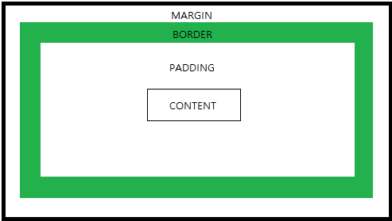

The CSS box model consists of: margins, borders, padding
simple image illustrating Magins, borders, padding
Let's see what they stand for
We can add a border around elements, and define space between elements by using CSS
Content
Content
Content without border, margin, padding
Content
Content
Content with a border
Content
Content
Content with a border and padding
Content
Content
Content with a border, padding and margin-top
Do you see the difference? Feel free to vist Click here for more information.